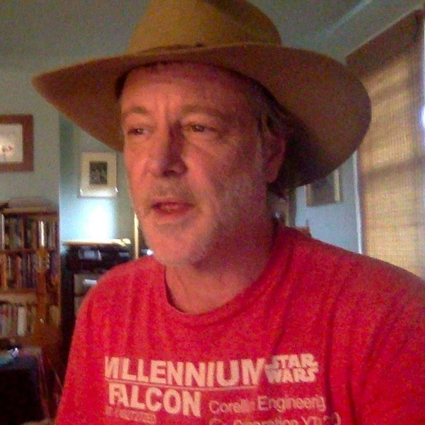

Ian Beardsley studied physics at The University of Oregon and worked in astronomy for Four years at the state observatory, Pine Mountain Observatory, in the high desert East of Bend, Oregon. His name appears on several papers in The Astrophysical Journal.